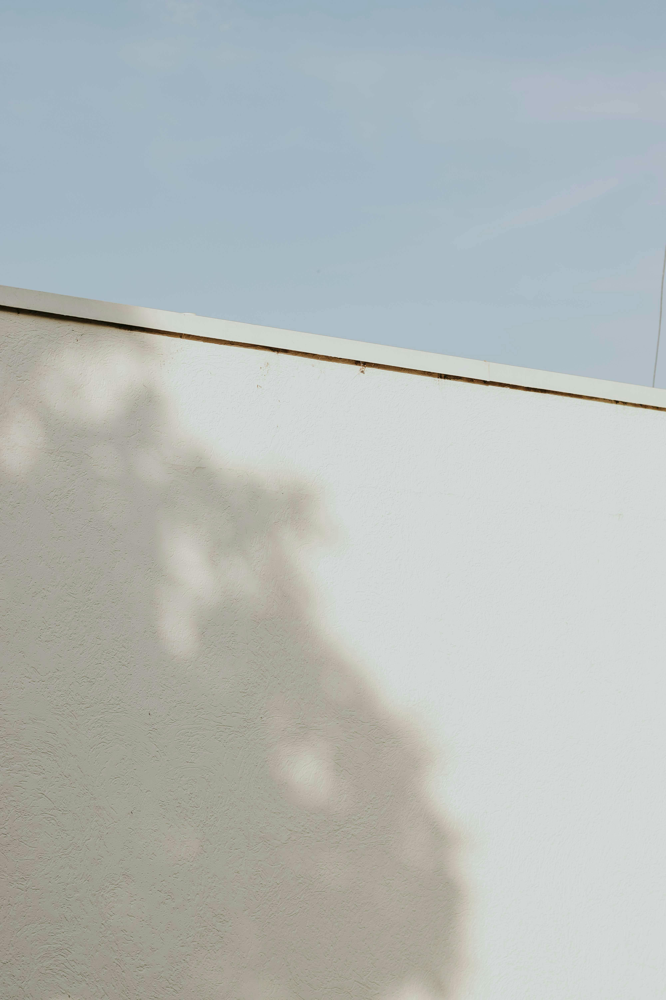

"내 방에서, 첫 걸음"
준비만 하는 사람에게
실행 마비와 비교 불안에서 벗어나,
첫 행동을 함께 시작하는 4주의 소규모 워크숍.
방 하나로 시작하는 나다운 삶

라이프해빙은 방 한 평의 변화에서 시작해
일상의 행동, 그리고 삶의 방향까지
조용히 함께 머무는 자리입니다.

보이지 않던 기준을 가장 먼저 보이게 하는 곳.
그것이 공간입니다.
선택의 피로는 기준이 생기는 순간 가벼워집니다.
답은 한 번의 결심이 아닌, 일상에 녹아드는 반복에서 옵니다.
한 번의 각성이 아닌,
일상에 녹아드는 반복.
결과보다 방향, 속도보다 지속성을 이야기합니다.



실행 마비와 비교 불안에서 벗어나,
첫 행동을 함께 시작하는 4주의 소규모 워크숍.

공간 회복에서 시작해
일·관계·결정의 기준이 다시 작동하기까지, 1:1로 함께하는 코칭.
"예전에는 무엇을 두고 무엇을 버려야 할지 몰라 늘 막막했어요.
지금은 사고, 비우고, 정리하는 데 내 기준이 생겼고,
그 기준이 생기니 일상이 다시 제 손에 잡히는 느낌이에요.
"미루기의 달인이었던 제가, 비우기의 달인이 되었습니다.
그러는 사이, 미뤄두기만 했던 공부를 어느새 시작하고 있는 저를 발견했어요.
내 방에서 시작하는 행동 변화.
방 하나의 변화에서 시작되는 4주.